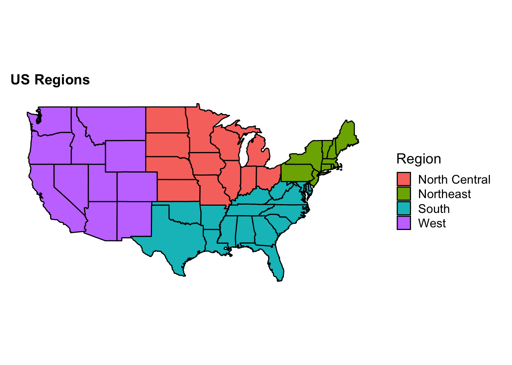
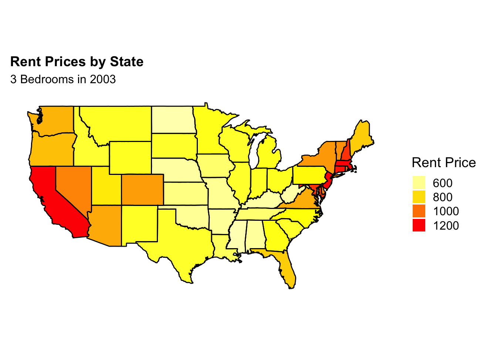
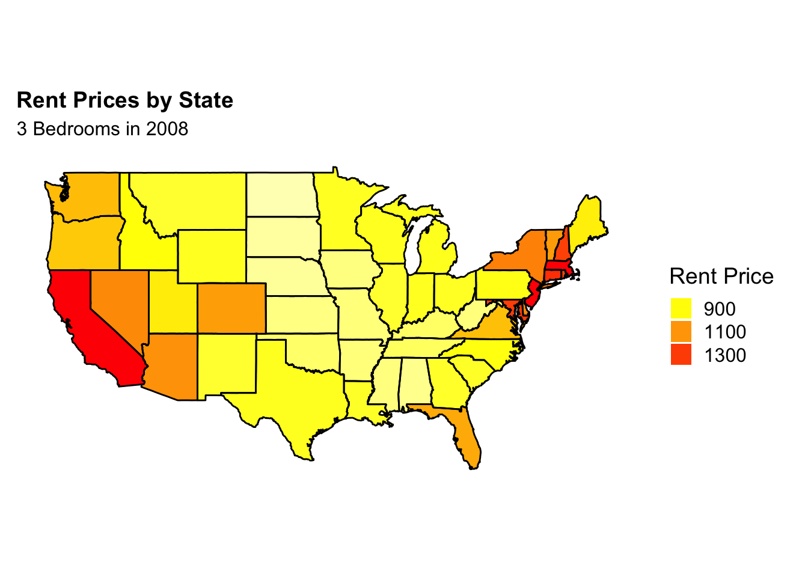
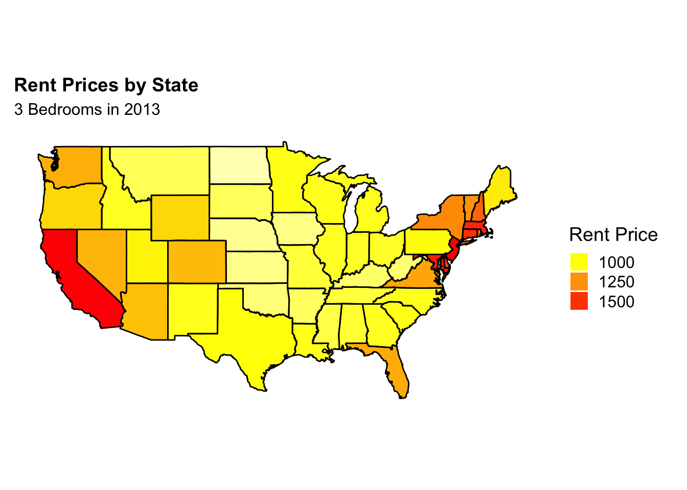
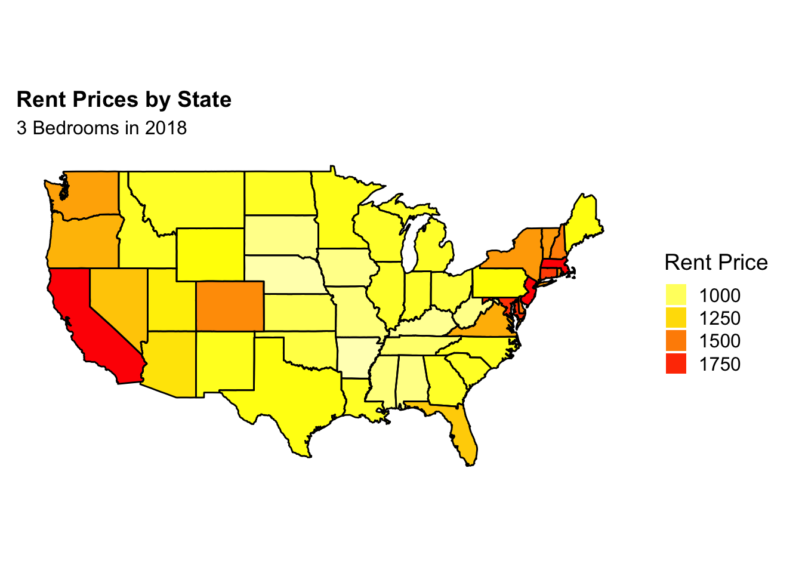
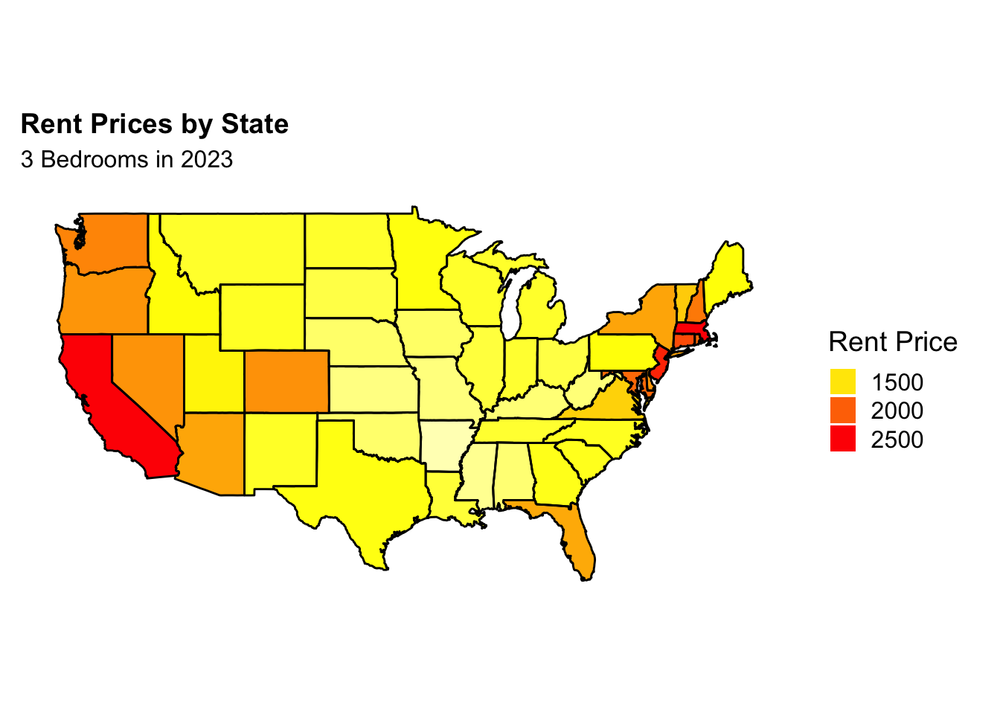
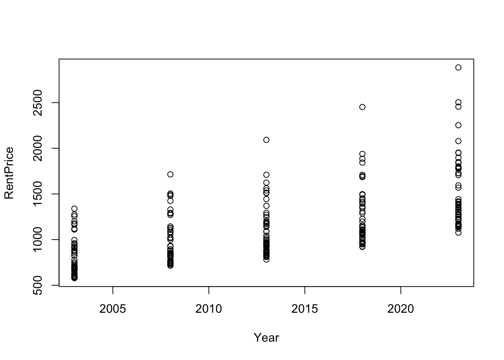
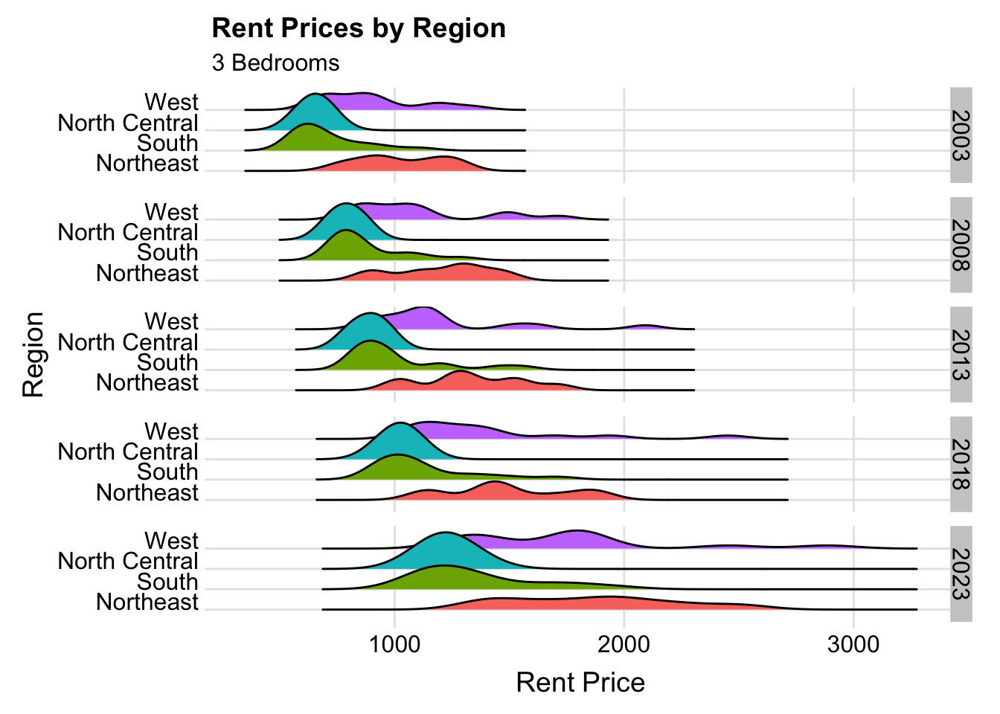
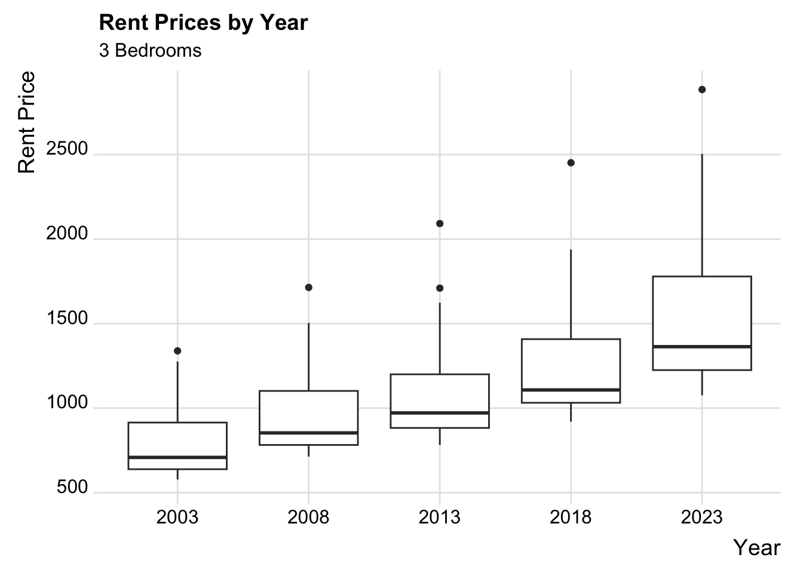

Project: Rent Prices by Region
Aamuktha, Kobe, Aman, Daniel, Brendon
2022-12-05
INTRODUCTION: Due to the current housing crisis sweeping not only Madison, but the nation itself, we wanted to investigate deeper into what the housing market looked like over the past 2 decades. We will analyze the changes in the housing market by for each region of the United States, across a time span of 20 years - focusing specifically on 2003, 2008, 2013, 2018, and 2023 as our years of interest. Our main questions are- what region of the United States has been the most expensive overall? And have housing prices seen an abnormally rapid increase between any year in particular, in any region in particular? Thesis: The costs of housing have increased over the past 2 decades across the US, but there are some regions that have been more affected than others by the national housing crisis, especially during certain years. DATA SET The data set was compiled from various datasets of the Office of Policy Development and Research for each of the years mentioned above. The data included the rent price for counties across the US, so we grouped it by state (averaging the rent prices of all available counties in the state and obtaining one value), and then grouped again by region doing the same process. Our variables (in the “years” data set) are: state, region, year, and rent. In our data set, we chose to only test 3-bedroom residences, as this is what an average family might reside in. SOURCE Our source was: Office of Policy Development and Research. (n.d.). 50th percentile rent estimates: HUD USER. 50th Percentile Rent Estimates | HUD USER. Retrieved December 5, 2022, from https://www.huduser.gov/portal/datasets/50per.html#2018 . We included a map below to understand and visualuze the regions of the United States that we were testing with this data. Some unusual factors that must be acknowledged that will affect the data are the various natural disasters that have taken place in the past 20 years (such as Hurricane Katrina and Hurricane Maria), stock market downturns, as well as the COVID-19 pandemic, since all 3 affect the economy and therefore affect housing costs. We intend to analyze these different datasets by organizing them into separate datasets based on each year (and the rent price of each state that year), and then combining them into a single data set grouping by a new variable, region (the region that each state lies in) and having that “years” data set show the rent price for each state in its respective region for each year. The dataset will be used to create plots depicting the change in rent price and region costs over year, and we will calculate correlation, p-values, variance, and percent change of our variables to answer our questions.


| x |
|---|
| 0.6260744 |

Rent Prices By State Evident from the series of graphs above, and the key on the side of these graphs, for each year the average rent price percentile estimate tends to increase across all parameters, least, medium, and greatest rents. While there are some subtle differences between each state, this graph is beginning to show us that the most expensive regions seem to remain the most expensive regions throughout. However, we will re-look at this later with more analysis. Correlation Coefficient Plot The general correlation coefficient between the year and rent supports the first assertion as its value of 0.63 is singnificant and close to 1. The plot also trends in an almost perfect linear fashion, which shows us it is reasonable to assume that rent price increases with the year. 
| Years | PValue | Low | High |
|---|---|---|---|
| 2003-2008 | 0.0004 | 78.94 | 263.09 |
| 2008-2013 | 0.0267 | 14.17 | 225.73 |
| 2013-2018 | 0.0141 | 31.20 | 271.18 |
| 2018-2023 | 0.0003 | 132.48 | 423.52 |
Rent Prices by Region This graph shows the densities of all the regions shifting to the right, showing that across all the regions of the US, the rent was increasing, even if to a varying degree (more of which will be analyzed later). The t-test table shows the p-value for each period of years and low and high values for the confidence interval are also labeled. T-test Table Additionally, a t-test was performed for each of the 4 time periods we have data for. All the p-values were less than 0.05 if using a 95% confidence interval, indicting that they are all statistically significant (when comapared to the null hypothesis that the change in means from year to year is not statistically significant).For 2008-2013, there was the greatest p-value of 0.03, indicting that this time period had the LEAST significant relationship between the change in rent price and year. In contrast, 2018-2023 had the smallest p-value of 0.0003 showing that there was a MORE significant relationship between the change in rent price and year. We can use these p-values to predict which time period will have the greatest and least percent change.

| Year | Median | Variance | PercentChange |
|---|---|---|---|
| 2003 | 708.84 | 45501 | NA |
| 2008 | 853.81 | 62071 | 20.45 |
| 2013 | 971.82 | 79948 | 13.82 |
| 2018 | 1107.87 | 102774 | 13.99 |
| 2023 | 1363.80 | 165721 | 23.1 |
We can determine that the median rent price across each year averaged from all the counties across the US has increased steadily. According to the table above, the greatest percent change was between 2018-2023, and the least was between 2008-2013, as we expected based on our p-value calculations.

| Northeast | South | NorthCentral | West |
|---|---|---|---|
| 90.48 | 96.75 | 81.35 | 105.51 |
| Northeast | South | NorthCentral | West |
|---|---|---|---|
| 32.01 | 19.38 | 17.44 | 36.28 |
The GREATEST percent change from 2003 -> 2023 was in the West with a magnitude of 105.51%. The LEAST percent change was in the North Central region: 81.35% (The South was the 2nd greatest, followed by the Northeast) Similar to above, West led with: 36.28% and North Central lagged with: 17.44% (However, this time the Northeast was the 2nd greatest while the South followed). The significance of testing this specific time period is that this was the period of greatest change in rent price across the US.

As evidenced by the box plot, the Northeast region consistently had the greatest mean rent across these time periods. However, it did not have the greatest percent change from the periods we test. In fact, the West had the greatest percent change from both 2018-2023, and 2003-2023. This trend makes sense, as the West’s housing prices grow the greatest amount, even visually, starting out near the other 2 regions’ prices in 2003 (South and North Central), and surpassing them to rival the Northeast in 2023. The West also had the greatest variance in 2023 (the year of greatest variance in the US), which could support that its housing market has grown the fastest. It is also visually obvious that NC had the least percent change both across the 2 decade period and within the last 5 years; it consistently had the cheapest rent prices, and the least variance. The most expensive year in the US overall (to date) will be 2023, while the cheapest will be 2003. The greatest change in housing costs ocurred in the just the past 5 years, which explains the current housing crisis. To answer our final questions: the Northeast has always been the most expensive region, and the West follows it, consistently having been the 2nd most expensive region, but progressively getting more and more expensive with each decade. North Central has consistently hosted the cheapest rent prices. And an abnormal increase in rent prices was seen between 2018-2023.
This could be due to the covid pandemic and the increasing rate of economic inflation. It could also be due to earlier natural disasters such as the CA wildfires or Hurricane Maria. Even international disasters and the international economy could play a significant role in the US economy (ex. 2018 Indonesian tsunami & earthquake). There was also a significant change from 2003-2008 (about 5% less than 2013-2018), which the economic downturn of 2002 could have played a role in. Some shortcoming of this analysis are that we don’t know what the cause of the increasing rent prices between years are, we can only speculate. For instance, we don’t know the inflation or per capita wage rate changes over there years, and if those changes paralleled the change in housing costs then our conclusion about the cause of the housing crisis being the rapid rate of increase of housing costs in some regions would be inaccurate. We also look at regions as a whole, but there might be some states, like NY or CA in their respective regions that have a greater influence than other states due to a larger population and pricier residences, which can be misleading when analyzing the entire region.In the future we could consider looking at more specific time periods and comparing them to the economic affectors of that time (such as percent change in inflation rates versus percent change in housing costs), so we could get an idea of the correlation between an event and the change in housing prices. We could also look at individual states instead of regions. Due to the percent changes derived from the medians of the regions across the US for these different years, we determined that the Northeast is the most expensive region to live, the North Central is the least expensive region to live in, and the housing costs abnormally fluctuated the most between 2019-2023. However, the housing market has shown the greatest abnormal growth in the west, and the least growth in North Central.